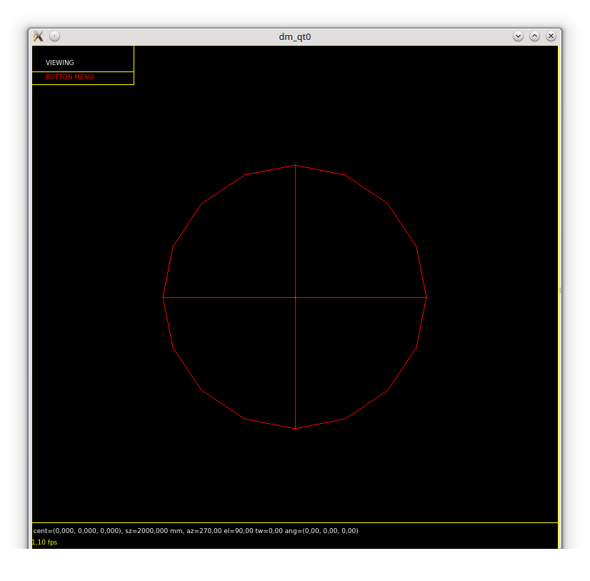
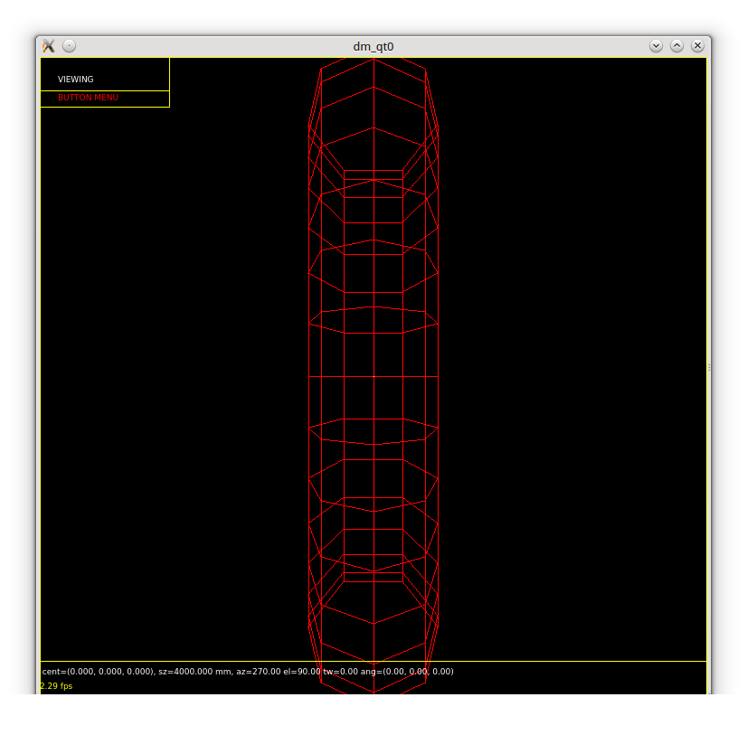
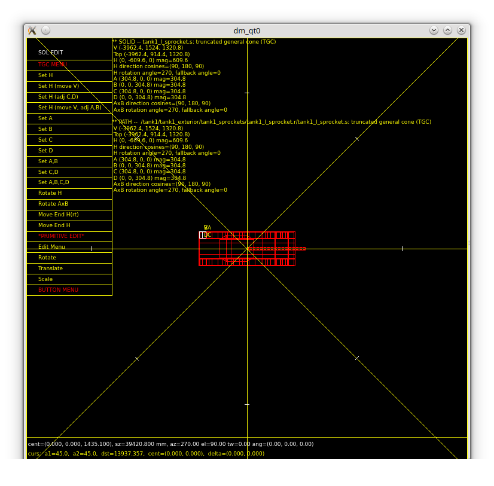
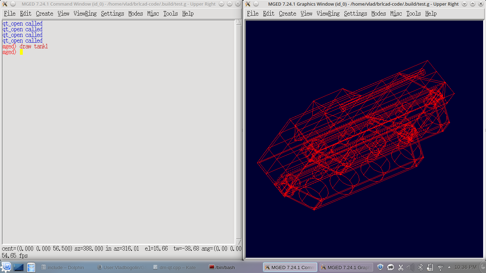

Project Summary
The purpose of this project was to create a new cross-platform 3D display manager using Qt framework that supports all the features of existing display manager's.
As BRL-CAD uses Tcl/Tk, the new display manager had to be integrated in Tk windows so this was one of the first features implemented. Then, basic drawing had to be done, more exactly line, points and text drawing. To obtain this a QPainter that draws on a QPixmap was used.



At this point the display manager could draw almost anything but there was no event processing involved so user input was ignored. The problem that occurs when talking about event processing is the communication between Qt and Tk, so every time a Qt event occurs the corresponding Tk one needs to be generated to obtain the desired behavior. This was simply done by using the Tcl "event generate" command and by processing Qt events.
The events can be grouped in three categories:
- mouse events:

- keyboard events:

- mouse + keyboard events:

As it comes to key bindings, I've tried to do everything in such a way that new key bindings can be easily added. In order to add a new key biding adding a function that receives as input a Qt event and returns the corresponding Tk one is necessary. Below you can find an example:
char* qt_mouseButton1Press(QEvent *event) {
if (event->type() == QEvent::MouseButtonPress) {
QMouseEvent *mouseEv = (QMouseEvent *)event;
if (mouseEv->button() == Qt::LeftButton) {
struct bu_vls str = BU_VLS_INIT_ZERO;
bu_vls_printf(&str, "<1> -x %d -y %d", mouseEv->x(), mouseEv->y());
return bu_vls_addr(&str);
}
}
return NULL;
}
As seen from the images I focused on integrating the display manager in classic mged first. After everything was working accordingly I moved towards integrating the new display manager
- in mged:

- and archer:
made some testing using some more complex objects to see that everything is displayed properly and working as expected.